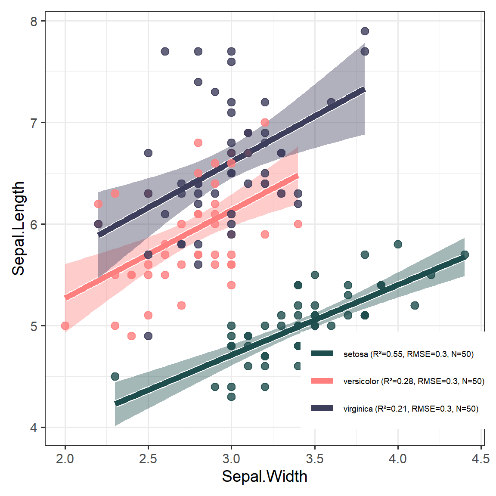
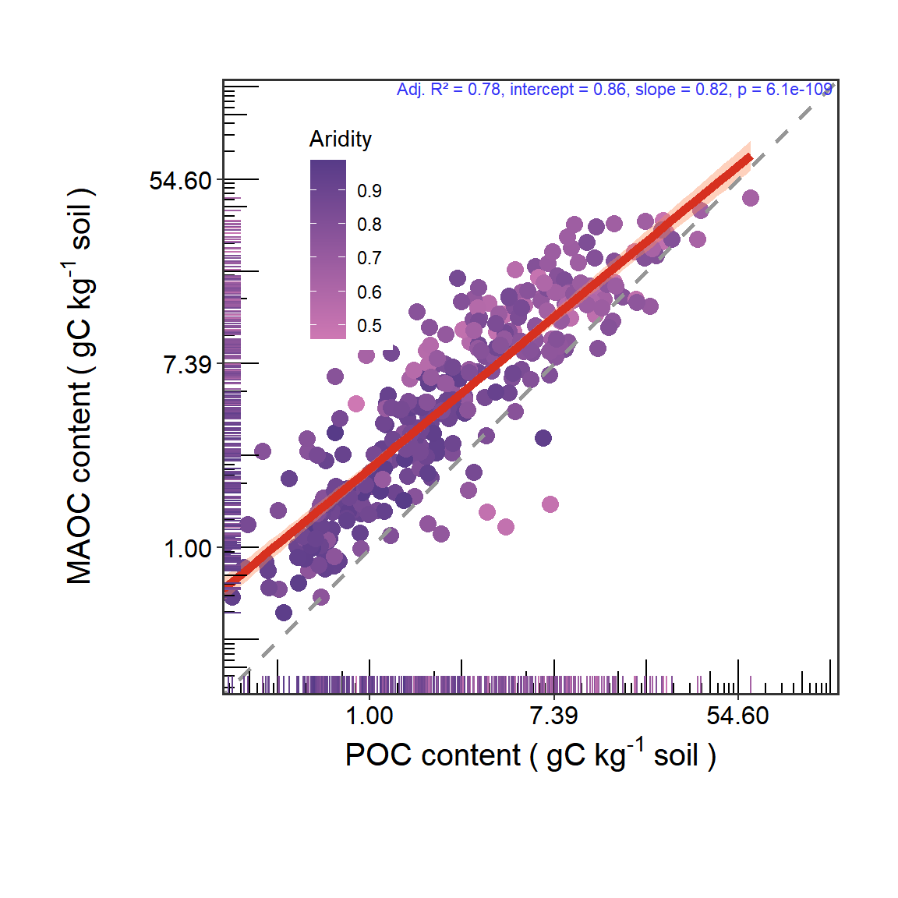
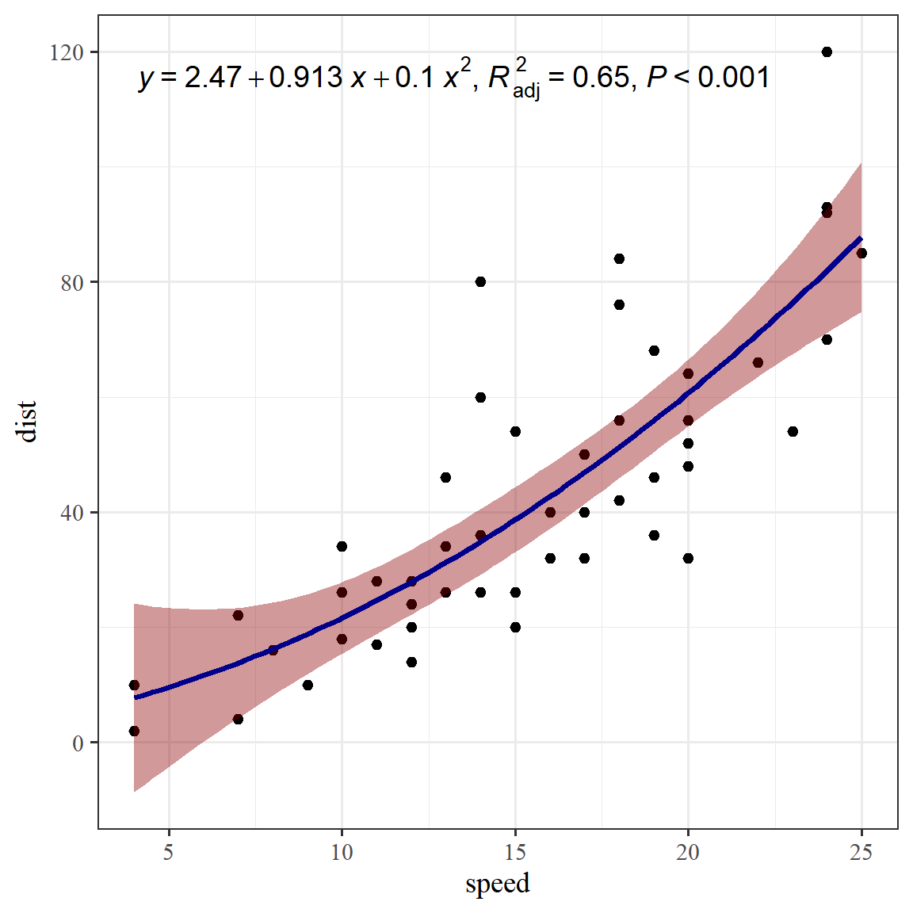

Chapter 2 R基础绘图系列-散点图
本章介绍R基础绘图系列-散点图
2.1 散点拟合图1
library(tidyverse)
library(ggplot2)
data(iris)
# 计算拟合参数并生成图例标签
# 针对每个组别计算 R2, RMSE 和 N
stats_data <- iris %>%
select(Species, Sepal.Length, Sepal.Width) %>%
group_by(Species) %>%
summarize(
model = list(lm(Sepal.Width ~ Sepal.Length)), # 明确指定 x 和 y
N = n(),
.groups = "drop"
) %>%
rowwise() %>%
mutate(
r2 = summary(model)$r.squared,
rmse = sqrt(mean(summary(model)$residuals^2)),
legend_label = sprintf("%s (R²=%.2f, RMSE=%.1f, N=%d)", Species, r2, rmse, N)
) %>%
ungroup()
# 将标签转换为命名向量，方便映射到颜色上
legend_labels_map <- setNames(stats_data$legend_label, stats_data$Species)
ggplot(iris, aes(x = Sepal.Width, y = Sepal.Length, color = Species, fill = Species)) +
# 置信区间（只显示填充区域）
stat_smooth(method = "lm", se = FALSE, alpha = 0.2, color = NA, fill = "grey70") +
# 白色边缘效果（先绘制粗的白线）
stat_smooth(method = "lm", se = TRUE, size = 3, color = "white") +
# 主要回归线（后绘制细的彩色线）
stat_smooth(method = "lm", se = FALSE, size = 2.4) +
# 绘制散点
geom_point(alpha = 0.8, size = 3,shape = 21) +
# 颜色设置 (使用我们计算好的动态标签 legend_labels_map)
scale_color_manual(
values = c("#1e4d4d", "#ff7f7f", "#3d3d5c"),
labels = legend_labels_map
) +
scale_fill_manual(
values = c("#1e4d4d", "#ff7f7f", "#3d3d5c"),
labels = legend_labels_map
) +
theme_bw(base_size = 14) +
theme(
legend.position = c(0.8, 0.15),
legend.title = element_blank(),
legend.text = element_text(size = 7),
plot.margin = margin(10, 10, 10, 10)
) +
# 优化图例图标形状：取消散点和阴影，仅显示为粗横线
guides(
color = guide_legend(override.aes = list(size = 6, shape = NA, fill = NA)),
fill = "none" # 隐藏多余的填充图例
)
Figure 2.1: 散点拟合图示例1
2.2 散点拟合图2
library(readxl)
library(scales)
library(viridis)
library(tidyverse)
library(ggplot2)
library(gglmannotate) # 添加线性注释参数
# 加载数据
df <- read_xlsx("data/line_fit_data1.xlsx", col_names = TRUE)
# 选择需要的列：ID, POC, MAOC, Aridity
df_sub <- df %>% dplyr::select(ID, POC, MAOC, Aridity)
head(df_sub)## # A tibble: 6 × 4
## ID POC MAOC Aridity
## <dbl> <dbl> <dbl> <dbl>
## 1 1 1.83 4.85 0.830
## 2 2 1.13 2.61 0.832
## 3 3 2.81 5.17 0.832
## 4 4 3.50 5.08 0.851
## 5 5 1.66 2.67 0.851
## 6 6 3.10 2.25 0.852# 确定 x 和 y 的最大范围
max_range <- max(df_sub$POC, df_sub$MAOC, na.rm = TRUE) + 100
min_range <- min(df_sub$POC, df_sub$MAOC, na.rm = TRUE)
# 使用ggplot2绘制散点图和线性拟合曲线
p1 <- df_sub %>%
ggplot(aes(x = POC, y = MAOC)) +
geom_point(aes(color = Aridity), size = 3.5) + # 根据Aridity着色的散点图
geom_smooth(method = "lm", color = "#d7301f", fill = "#fc8d59", linewidth = 2) + # 线性拟合曲线
geom_abline(slope = 1, intercept = 0, linewidth = 1, linetype = 2, color = "#969696") + # 添加y=x的参考线
scale_y_continuous(trans = log_trans(), # y轴对数变换
labels = function(x) number(x, accuracy = 0.01), # y轴标签格式化
expand = c(0, 0), # 去除y轴扩展
limits = c(min_range, max_range)) + # 设置y轴范围
scale_x_continuous(trans = log_trans(), # x轴对数变换
# labels = function(x) {round(x, 1)}, # x轴标签格式化
labels = function(x) number(x, accuracy = 0.01), # x轴标签格式化,round对于整数不显示.0，number函数更适合
expand = c(0, 0), # 去除x轴扩展
limits = c(min_range, max_range)) + # 设置x轴范围
annotation_logticks(sides = "bl", outside = FALSE, # 添加对数刻度线
short = unit(0.2, "cm"),
mid = unit(0.4, "cm"),
long = unit(0.6, "cm")) +
geom_rug(aes(color = Aridity), length = unit(0.03, "npc")) + # 添加边缘线
geom_lmannotate(colour = "#3635F6") + # 添加拟合参数注释
# scale_color_viridis(option = "plasma") + # 设置颜色映射
scale_color_gradient(low = "#CE78B3FF",high = "#573B88FF")+
labs(x = expression(atop("POC content"~paste("(",~"gC",~"kg"^"-1"~"soil",~")"))), # 自定义x轴标签
y = expression(atop("MAOC content"~paste("(",~"gC",~"kg"^"-1"~"soil",~")")))) + # 自定义y轴标签
theme_bw() + # 使用白色背景主题
theme(axis.text.x = element_text(size = 12, color = "#000000"), # 自定义轴文本样式
axis.text.y = element_text(size = 12, color = "#000000"),
axis.title = element_text(size = 15, color = "#000000"),
plot.title = element_text(size = 20, color = "#000000", hjust = 0.5),
panel.grid = element_blank(), # 移除网格线
plot.margin = margin(t = 1, r = 1, b = 1, l = 1, unit = "cm"), # 设置绘图边距
aspect.ratio = 1, # 设置绘图宽高比
legend.position = c(0.2, 0.75), # 设置图例位置
panel.border = element_rect(linewidth = 1)) # 添加面板边框
print(p1)
Figure 2.2: 散点拟合图示例2
2.3 散点拟合图3
ggpmisc重点是与拟合模型相关的注释和绘图。模型拟合对象的估计值可以以文字、模型方程、方差分析和摘要表的形式在ggplot中显示。预测值、残差、偏差和权重可以绘制出各种模型拟合函数的图。支持线性模型、多项式回归、分位数回归、长轴回归、非线性回归以及不同的鲁棒和抗性回归方法，以及基于这些方法的用户自定义包装函数。这里展示其进行散点拟合。
library(ggplot2)
library(ggpmisc)
library(patchwork)
library(ggstyle)
library(ggrepel)
# ==================== 1. 全局主题 ====================
my_theme <- theme_bw(base_size = 14) + set_font()
theme_set(my_theme)
options(ggplot2.discrete.colour = ggsci::scale_color_npg)
options(ggplot2.discrete.fill = ggsci::scale_fill_npg)
# ==================== 2. 绘图 ====================
formula <- y ~ x + I(x^2)
ggplot(cars, aes(speed, dist)) +
geom_point() +
# stat_fit_deviations(formula = formula, colour = "red") +
stat_poly_line(formula = formula,colour = "blue4",fill = "red4") + # 显示拟合线，根据公式
stat_poly_eq(use_label(c("eq", "adj.R2", "P")), formula = formula) # 显示方程
Figure 2.3: 散点拟合图示例3